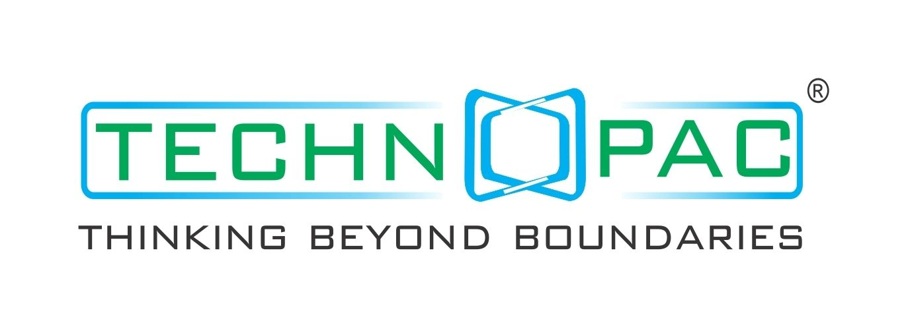
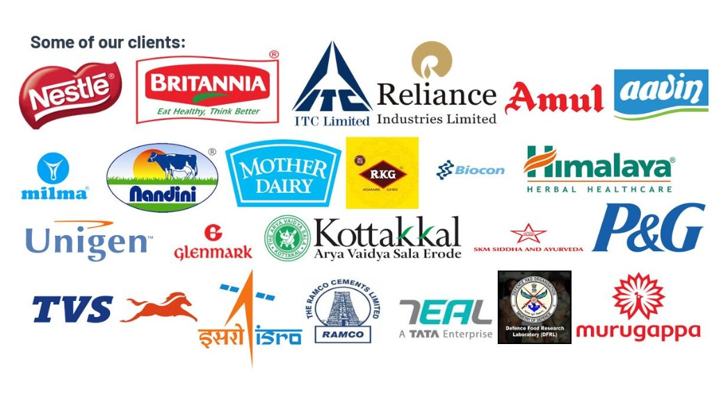

Technopac was founded in 1998 and is based in Coimbatore. For 25+ years we have built automation, processing, packaging, and special-purpose machines that leading brands run every day.
Trusted for high-quality machines that are versatile and flexible. Known for production speed, accuracy, and output that stays consistent. Support runs from the first consultation through to after-sales service.
Headquarters and manufacturing are in Coimbatore, with offices across India. Exports reach the Middle East, Sri Lanka, Malaysia, Singapore, Ghana, Albania, and Kenya, and the list is still growing.

Share the product and the pack. We recommend the machine, prepare a quotation, build it, install it, train your team, and stay for spares and service.
technopac.trak@gmail.com
www.technopac.net
Coimbatore 641035
One machine, or a full line. The work starts with your product and ends with the line running, plus training and later service.
Factory: Sf. No. 10/2B, V.K.V. Kumaraguru Nagar, Saravanampatti, Coimbatore 641035. Offices in Hyderabad and Mysuru. Partner desks in Sri Lanka, Kenya, China, and Hong Kong.
To recommend a suitable machine and prepare a quotation, please share:
If a size or a detail is missing, send what you know. We will ask for the rest.
Monday to Saturday, 9:00 a.m. to 7:00 p.m.
technopac.trak@gmail.com
www.technopac.net
Grouped by the work on your line, with the purpose of each machine.
| Blender | Mixes ingredients into an even blend |
| Dryer | Dries product to the moisture you need |
| Fryer | Fries in a controlled batch |
| Mixer | Mixes powders, granules, or pastes |
| Sigma mixer | Mixes heavy doughs and pastes |
| Silo | Stores bulk material before packing |
| Pulveriser | Grinds material to a fine powder |
| Roaster | Roasts grains, nuts, and spices |
| Juice processing unit | Extracts and prepares juice |
| Destoner | Removes stones from grain and pulses |
| Grading machine | Sorts product by size |
| Mixing tank | Mixes and holds liquids |
| Sifter | Separates fine and coarse particles |
| Vegetable-cutting machine | Cuts vegetables to a set size |
| RO water unit | Cleans water used in the process |
| UV tunnel | Passes product under UV light |
| Pouch packing | Fills and seals pouches |
| Bottle packing | Fills bottles |
| Bagging machine | Fills and closes bags |
| Capping machine | Fits caps on bottles and jars |
| Inter-capping | Seals the foil under the cap |
| Tray sealer | Seals a film lid onto trays |
| Web sealer | Seals a continuous film web |
| Rotary filling | Fills many containers on a turning line |
| Labelling machine | Applies labels on packs |
| Taping machine | Tapes cartons closed |
| Shrink tunnel | Shrinks film tight around a pack |
| Shrink-wrap machine | Wraps a pack in shrink film |
| L-sealer | Seals film around a product |
| Stretch wrapper | Wraps a pallet for dispatch |
| Secondary packing | Places packs into cartons or cases |
| Batch coding and serialisation | Prints the batch code on each pack |
| Capsule polishing and sorting | Cleans and sorts capsules |
| Blister-pack leak tester | Finds blister packs that leak |
| Powder sampling | Takes a sample from a powder batch |
| Vial crimping / de-capping | Seals or opens vial caps |
| Syringe assembly | Puts syringe parts together |
| Dosage dispensing | Measures and releases a set dose |
| Pick and place | Moves a product to the next point |
| Robotic arms | Handle products on the line |
| Palletising | Stacks cases onto a pallet |
| De-palletising | Takes cases off a pallet |
| Robotic cartoning | Loads products into cartons |
| Vision camera | Checks the pack with a camera |
| Collaborative robots | Work beside people in a clean area |
| Robotic inspection | Checks quality on the line |
| Robotic filling | Fills containers with a robot |
| SCADA monitoring | Shows how the line is running |
| Recipe management | Stores the settings for each product |
| Control panel and PLC | Starts, stops, and runs the machine |
| Weighing and dispensing | Weighs and releases ingredients |
A photo is enough to start. We will tell you which machine fits.
technopac.trak@gmail.com
www.technopac.net